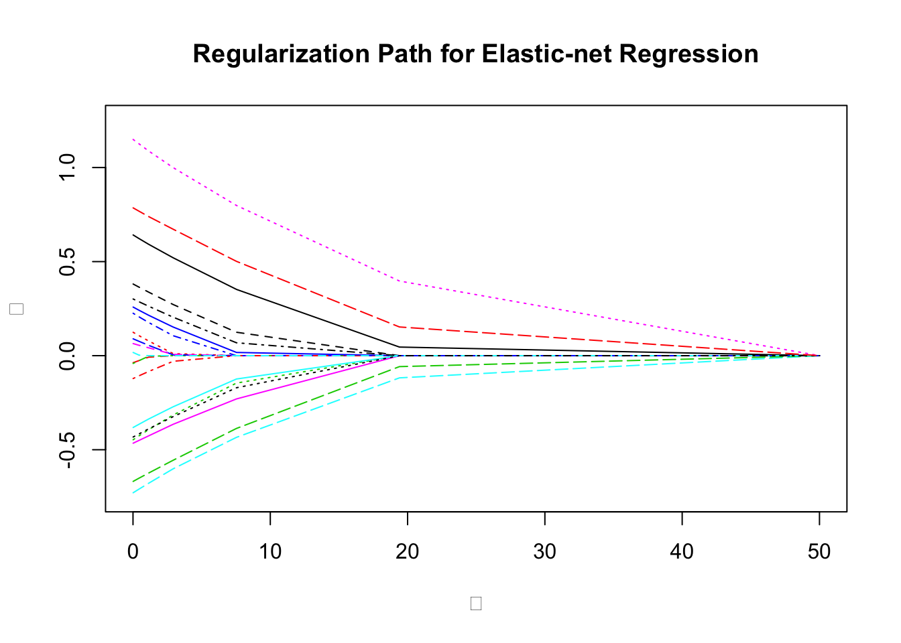

Elastic Net
Introduction
Often in applications, we encounter problems that require regularization to prevent overfitting, introduce sparsity, facilitate variable selection, or impose prior distributions on parameters. Two of the most common regularization functions are the \(l_1\)-norm and squared \(l_2\)-norm, combined in the elastic net regression model (H. Zou 2005, Friedman, Hastie, and Tibshirani (2010)),
\[ \begin{array}{ll} \underset{\beta}{\mbox{minimize}} & \frac{1}{2m}\|y - X\beta\|_2^2 + \lambda(\frac{1-\alpha}{2}\|\beta\|_2^2 + \alpha\|\beta\|_1). \end{array} \]
Here \(\lambda \geq 0\) is the overall regularization weight and \(\alpha \in [0,1]\) controls the relative \(l_1\) versus squared \(l_2\) penalty. Thus, this model encompasses both ridge (\(\alpha = 0\)) and lasso (\(\alpha = 1\)) regression.
Example
To solve this problem in CVXR, we first define a function that calculates the regularization term given the variable and penalty weights.
suppressMessages(suppressWarnings(library(CVXR)))
elastic_reg <- function(beta, lambda = 0, alpha = 0) {
ridge <- (1 - alpha) * sum(beta^2)
lasso <- alpha * p_norm(beta, 1)
lambda * (lasso + ridge)
}Later, we will add it to the scaled least squares loss as shown below.
loss <- sum((y - X %*% beta)^2) / (2 * n)
obj <- loss + elastic_reg(beta, lambda, alpha)The advantage of this modular approach is that we can easily incorporate elastic net regularization into other regression models. For instance, if we wanted to run regularized Huber regression, CVXR allows us to reuse the above code with just a single changed line.
loss <- huber(y - X %*% beta, M)We generate some synthetic sparse data for this example.
set.seed(1)
# Problem data
p <- 20
n <- 1000
DENSITY <- 0.25 # Fraction of non-zero beta
beta_true <- matrix(rnorm(p), ncol = 1)
idxs <- sample.int(p, size = floor((1 - DENSITY) * p), replace = FALSE)
beta_true[idxs] <- 0
sigma <- 45
X <- matrix(rnorm(n * p, sd = 5), nrow = n, ncol = p)
eps <- matrix(rnorm(n, sd = sigma), ncol = 1)
y <- X %*% beta_true + epsWe fit the elastic net model for several values of \(\lambda\) .
TRIALS <- 10
beta_vals <- matrix(0, nrow = p, ncol = TRIALS)
lambda_vals <- 10^seq(-2, log10(50), length.out = TRIALS)
beta <- Variable(p)
loss <- sum((y - X %*% beta)^2) / (2 * n)
## Elastic-net regression
alpha <- 0.75
beta_vals <- sapply(lambda_vals,
function (lambda) {
obj <- loss + elastic_reg(beta, lambda, alpha)
prob <- Problem(Minimize(obj))
result <- solve(prob)
result$getValue(beta)
})We can now get a table of the coefficients.
d <- as.data.frame(beta_vals)
rownames(d) <- sprintf("$\\beta_{%d}$", seq_len(p))
names(d) <- sprintf("$\\lambda = %.3f$", lambda_vals)
library(kableExtra)
knitr::kable(d, format = "html", caption = "Elastic net fits from `CVXR`", digits = 3) %>%
kable_styling("striped") %>%
column_spec(1:11, background = "#ececec")| \(\lambda = 0.010\) | \(\lambda = 0.026\) | \(\lambda = 0.066\) | \(\lambda = 0.171\) | \(\lambda = 0.441\) | \(\lambda = 1.135\) | \(\lambda = 2.924\) | \(\lambda = 7.533\) | \(\lambda = 19.408\) | \(\lambda = 50.000\) | |
|---|---|---|---|---|---|---|---|---|---|---|
| \(\beta_{1}\) | 0.642 | 0.641 | 0.639 | 0.634 | 0.622 | 0.592 | 0.520 | 0.352 | 0.046 | 0 |
| \(\beta_{2}\) | -0.037 | -0.037 | -0.036 | -0.033 | -0.026 | -0.008 | 0.000 | 0.000 | 0.000 | 0 |
| \(\beta_{3}\) | -0.447 | -0.446 | -0.444 | -0.439 | -0.426 | -0.393 | -0.315 | -0.146 | 0.000 | 0 |
| \(\beta_{4}\) | 0.225 | 0.225 | 0.223 | 0.218 | 0.206 | 0.177 | 0.106 | 0.000 | 0.000 | 0 |
| \(\beta_{5}\) | -0.729 | -0.728 | -0.726 | -0.721 | -0.709 | -0.678 | -0.601 | -0.434 | -0.118 | 0 |
| \(\beta_{6}\) | -0.465 | -0.465 | -0.463 | -0.460 | -0.450 | -0.426 | -0.365 | -0.230 | 0.000 | 0 |
| \(\beta_{7}\) | 0.381 | 0.380 | 0.379 | 0.375 | 0.364 | 0.338 | 0.272 | 0.125 | 0.000 | 0 |
| \(\beta_{8}\) | 0.124 | 0.124 | 0.122 | 0.117 | 0.106 | 0.078 | 0.011 | 0.000 | 0.000 | 0 |
| \(\beta_{9}\) | -0.041 | -0.041 | -0.039 | -0.036 | -0.026 | -0.003 | 0.000 | 0.000 | 0.000 | 0 |
| \(\beta_{10}\) | 0.090 | 0.089 | 0.088 | 0.085 | 0.076 | 0.055 | 0.004 | 0.000 | 0.000 | 0 |
| \(\beta_{11}\) | -0.382 | -0.381 | -0.379 | -0.375 | -0.364 | -0.337 | -0.272 | -0.124 | 0.000 | 0 |
| \(\beta_{12}\) | 0.064 | 0.064 | 0.063 | 0.061 | 0.055 | 0.042 | 0.007 | 0.000 | 0.000 | 0 |
| \(\beta_{13}\) | -0.432 | -0.432 | -0.430 | -0.426 | -0.416 | -0.389 | -0.324 | -0.171 | 0.000 | 0 |
| \(\beta_{14}\) | -0.122 | -0.121 | -0.120 | -0.116 | -0.107 | -0.084 | -0.030 | 0.000 | 0.000 | 0 |
| \(\beta_{15}\) | -0.668 | -0.668 | -0.666 | -0.662 | -0.651 | -0.624 | -0.556 | -0.387 | -0.058 | 0 |
| \(\beta_{16}\) | 0.258 | 0.258 | 0.256 | 0.252 | 0.241 | 0.215 | 0.152 | 0.017 | 0.000 | 0 |
| \(\beta_{17}\) | 0.017 | 0.017 | 0.015 | 0.012 | 0.003 | 0.000 | 0.000 | 0.000 | 0.000 | 0 |
| \(\beta_{18}\) | 1.149 | 1.148 | 1.146 | 1.140 | 1.126 | 1.088 | 1.000 | 0.799 | 0.397 | 0 |
| \(\beta_{19}\) | 0.301 | 0.301 | 0.299 | 0.296 | 0.286 | 0.263 | 0.205 | 0.069 | 0.000 | 0 |
| \(\beta_{20}\) | 0.786 | 0.785 | 0.783 | 0.779 | 0.768 | 0.740 | 0.672 | 0.501 | 0.153 | 0 |
We plot the coefficients against the regularization.
plot(0, 0, type = "n", main = "Regularization Path for Elastic-net Regression",
xlab = expression(lambda), ylab = expression(beta),
ylim = c(-0.75, 1.25), xlim = c(0, 50))
matlines(lambda_vals, t(beta_vals))
We can also compare with the glmnet results.
suppressMessages(library(glmnet))
model_net <- glmnet(X, y, family = "gaussian", alpha = alpha,
lambda = lambda_vals, standardize = FALSE,
intercept = FALSE)
## Reverse order to match beta_vals
coef_net <- as.data.frame(as.matrix(coef(model_net)[-1, seq(TRIALS, 1, by = -1)]))
rownames(coef_net) <- sprintf("$\\beta_{%d}$", seq_len(p))
names(coef_net) <- sprintf("$\\lambda = %.3f$", lambda_vals)
knitr::kable(coef_net, format = "html", digits = 3, caption = "Coefficients from `glmnet`") %>%
kable_styling("striped") %>%
column_spec(1:11, background = "#ececec")| \(\lambda = 0.010\) | \(\lambda = 0.026\) | \(\lambda = 0.066\) | \(\lambda = 0.171\) | \(\lambda = 0.441\) | \(\lambda = 1.135\) | \(\lambda = 2.924\) | \(\lambda = 7.533\) | \(\lambda = 19.408\) | \(\lambda = 50.000\) | |
|---|---|---|---|---|---|---|---|---|---|---|
| \(\beta_{1}\) | 0.642 | 0.641 | 0.640 | 0.637 | 0.628 | 0.605 | 0.550 | 0.400 | 0.057 | 0 |
| \(\beta_{2}\) | -0.037 | -0.037 | -0.036 | -0.033 | -0.026 | -0.008 | 0.000 | 0.000 | 0.000 | 0 |
| \(\beta_{3}\) | -0.447 | -0.446 | -0.445 | -0.441 | -0.430 | -0.404 | -0.337 | -0.171 | 0.000 | 0 |
| \(\beta_{4}\) | 0.226 | 0.225 | 0.223 | 0.219 | 0.209 | 0.183 | 0.117 | 0.000 | 0.000 | 0 |
| \(\beta_{5}\) | -0.729 | -0.728 | -0.727 | -0.724 | -0.715 | -0.693 | -0.634 | -0.494 | -0.157 | 0 |
| \(\beta_{6}\) | -0.465 | -0.465 | -0.464 | -0.461 | -0.454 | -0.435 | -0.384 | -0.261 | 0.000 | 0 |
| \(\beta_{7}\) | 0.381 | 0.380 | 0.379 | 0.376 | 0.367 | 0.346 | 0.288 | 0.144 | 0.000 | 0 |
| \(\beta_{8}\) | 0.124 | 0.124 | 0.122 | 0.118 | 0.107 | 0.081 | 0.012 | 0.000 | 0.000 | 0 |
| \(\beta_{9}\) | -0.041 | -0.041 | -0.039 | -0.036 | -0.027 | -0.005 | 0.000 | 0.000 | 0.000 | 0 |
| \(\beta_{10}\) | 0.090 | 0.089 | 0.088 | 0.085 | 0.077 | 0.056 | 0.003 | 0.000 | 0.000 | 0 |
| \(\beta_{11}\) | -0.382 | -0.381 | -0.380 | -0.377 | -0.368 | -0.345 | -0.288 | -0.143 | 0.000 | 0 |
| \(\beta_{12}\) | 0.064 | 0.064 | 0.063 | 0.061 | 0.054 | 0.040 | 0.000 | 0.000 | 0.000 | 0 |
| \(\beta_{13}\) | -0.432 | -0.432 | -0.431 | -0.428 | -0.420 | -0.399 | -0.345 | -0.199 | 0.000 | 0 |
| \(\beta_{14}\) | -0.122 | -0.121 | -0.120 | -0.116 | -0.108 | -0.086 | -0.032 | 0.000 | 0.000 | 0 |
| \(\beta_{15}\) | -0.668 | -0.668 | -0.667 | -0.664 | -0.657 | -0.638 | -0.589 | -0.447 | -0.083 | 0 |
| \(\beta_{16}\) | 0.258 | 0.258 | 0.257 | 0.253 | 0.244 | 0.220 | 0.161 | 0.020 | 0.000 | 0 |
| \(\beta_{17}\) | 0.017 | 0.017 | 0.015 | 0.012 | 0.003 | 0.000 | 0.000 | 0.000 | 0.000 | 0 |
| \(\beta_{18}\) | 1.149 | 1.149 | 1.148 | 1.144 | 1.136 | 1.114 | 1.060 | 0.923 | 0.558 | 0 |
| \(\beta_{19}\) | 0.301 | 0.301 | 0.300 | 0.297 | 0.289 | 0.268 | 0.215 | 0.074 | 0.000 | 0 |
| \(\beta_{20}\) | 0.786 | 0.785 | 0.784 | 0.782 | 0.775 | 0.756 | 0.712 | 0.578 | 0.212 | 0 |
Session Info
sessionInfo()## R version 3.5.1 (2018-07-02)
## Platform: x86_64-apple-darwin17.7.0 (64-bit)
## Running under: macOS 10.14.1
##
## Matrix products: default
## BLAS/LAPACK: /usr/local/Cellar/openblas/0.3.3/lib/libopenblasp-r0.3.3.dylib
##
## locale:
## [1] en_US.UTF-8/en_US.UTF-8/en_US.UTF-8/C/en_US.UTF-8/en_US.UTF-8
##
## attached base packages:
## [1] stats graphics grDevices datasets utils methods base
##
## other attached packages:
## [1] glmnet_2.0-16 foreach_1.4.4 Matrix_1.2-15 kableExtra_0.9.0
## [5] CVXR_0.99-2
##
## loaded via a namespace (and not attached):
## [1] gmp_0.5-13.2 Rcpp_0.12.19 highr_0.7
## [4] compiler_3.5.1 pillar_1.3.0 iterators_1.0.10
## [7] R.methodsS3_1.7.1 R.utils_2.7.0 tools_3.5.1
## [10] digest_0.6.18 bit_1.1-14 viridisLite_0.3.0
## [13] evaluate_0.12 tibble_1.4.2 lattice_0.20-35
## [16] pkgconfig_2.0.2 rlang_0.3.0.1 rstudioapi_0.8
## [19] yaml_2.2.0 blogdown_0.9.2 xfun_0.4
## [22] xml2_1.2.0 httr_1.3.1 Rmpfr_0.7-1
## [25] ECOSolveR_0.4 stringr_1.3.1 knitr_1.20
## [28] hms_0.4.2 rprojroot_1.3-2 bit64_0.9-7
## [31] grid_3.5.1 R6_2.3.0 rmarkdown_1.10
## [34] bookdown_0.7 readr_1.1.1 magrittr_1.5
## [37] codetools_0.2-15 scales_1.0.0 backports_1.1.2
## [40] htmltools_0.3.6 scs_1.1-1 rvest_0.3.2
## [43] colorspace_1.3-2 stringi_1.2.4 munsell_0.5.0
## [46] crayon_1.3.4 R.oo_1.22.0Source
References
Friedman, J., T. Hastie, and R. Tibshirani. 2010. “Regularization Paths for Generalized Linear Models via Coordinate Descent.” Journal of Statistical Software 33 (1): 1–22.
H. Zou, T. Hastie. 2005. “Regularization and Variable Selection via the Elastic–Net.” Journal of the Royal Statistical Society. Series B (Methodological) 67 (2): 301–20.